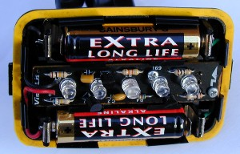
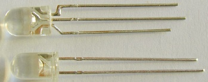
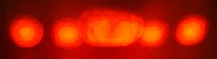
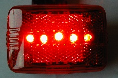
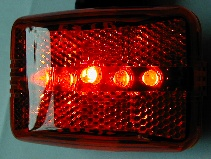

Recently I looked at an old 3-LED VistaLite rear light and thought about chucking it and buying one of the new VistaLite Super Nebulas, a 5-LED light which is supposedly even brighter than their previous 5-LED light (the one with the silver plastic reflector behind the LEDs).
 Modified VistaLite: the 60° LED is in the middle But I decided to try to upgrade the LEDs on it instead. The circuit board is easy to get at, you just remove a couple of screws and you can flip it over to look at the backside. Looking closely at the circuit board, I found that the power tracks were parallel and the LEDs straddled it, and there were holes for 5 LEDs!
I went to Maplin and bought some Hyperbright and Extreme brightness LEDs. The Hyperbright ones had a 30° viewing angle and light output of 3.5 candles, and the Extreme brightness ones an 8° viewing angle and light output of 7 candles.
Installing the new LEDs was easy. Both the LEDs I took out and the new ones had a flat edge, so I put the new ones in so the flat edge was the same place as flat edge of the old ones.
The Hyperbright ones were both brighter and had a wider viewing angle than the ones that were in it before. A definite win. I installed one Extreme brightness LED, but it had such a narrow viewing angle that most of the time it weren't contributing anything to the light output. So I removed it.
Still curious, I went back to Maplin, wanting to try out their 60° (1.5 candle) Hyperbright LEDs. I bought a few, but was a bit disturbed to find out that they had three legs and a completely round top. The shop guy said that they were basically two LED devices stuck into one clear plastic package. The Maplin catalog says that the LEDs share a common cathode (not that that means much to me) so there were three legs, not four.
 The longer middle leg of the 60° LED (top) corresponds with the longer leg of the 30° LED (bottom). So I had to figure out how to install three legs into two holes. I guessed that the longer leg on the three-leg LED (the shared leg of the two devices, which was the middle leg) corresponded with the longer leg on the normal LEDs. So I soldered the two outside legs of the 60° LED together and cut one of them off. I soldered the LED into the circuit board with the remaining side leg attached to the place I'd put the flat parts of the normal LED, and the longer middle leg on the other side.
(The Maplin catalog says that the 60° LEDs have a common cathode, and they also say that the cathode is the part marked with a short lead and the flat spot on a normal LED . However, the shared leg of the 60° LEDs was definitely the middle leg, and it was longer, and it clearly corresponded with the longer lead on the normal LED. So they've got something wrong there! At any rate, the positive voltage needs to be applied to the longer legs and the negative voltage to the shorter legs for both the normal and wide-angle LEDs I got.)
 I held the modified VistaLite about 1" from the wall to see the beam pattern. And it worked! I found out that the LED is 60°s in one direction only: it puts out a beam that's much wider than it is tall. This is what you'd expect from two LEDs side by side, and it's perfect for LED rear lights, since you need more side-to-side visibility than up-down visibility. The plastic bit of the LED is wider in one dimension than the other, so you can figure out how to install it so the wideness of the beam is oriented in the right direction.
Although the 60° LED has a lower brightness (candlepower) than the 30° LEDs, its much wider viewing angle increases dramatically the angle at which you can see the VistaLite, making it a clear win.
  Looking directly at VistaLite (left), the 60° LED looks more or less like the others. Looking at the VistaLite from the side (right) shows that the middle LED clearly improves the side viewing angle! Happy with my results on the old VistaLite, I went to butcher the other ones (I have quite a collection of VistaLite rear lights!). The cicuit board of the newer lights makes it even easier to figure out how to put in the new LEDs, as there's a circle with a flat edge printed on the curcuit board. I discovered that the LEDs used in the 5-LED lights that include the silvery plastic reflector are identical to the 30° Hyperbright ones, so it wasn't any use replacing those. Still, it was worth taking one or two of them out and putting in 60° ones instead to improve the viewing angle.
This went along fine until I came to the last VistaLite I had. I opened this one up to find that its LEDs looked like they were soldered in backwards! The flat spot on the LED was opposite the flat spot printed on the circuit board. So what was happening here? Were the voltages flipped around on this circuit board, or did it have strange LEDs, with the flat spots on the opposite side? I didn't want to experiment with my last 60° LED, so I used one of the too-narrow Extreme brightness ones. I first put it in so its flat spot lined up with the flat spots of the other LEDs. It didn't work. I then took it out and reversed it, so the flat spot lined up with the flat spot printed on the circuit board. And then it worked. Which meant that the voltages of the circuit board were normal, it's just that the LEDs installed in it had the flat spots opposite the place they normally were. So I then installed the 60° LED the way I had in the other VistaLites, with the side leg soldered next to the flat spot on the diagram and the longer middle leg soldered on the opposite side. Success. I think the moral of this story is, if the circuit board has any printed diagrams, put the longer leg opposite the printed flat spot.
I took a look at a Cateye LD500 I had around to see if I could upgrade that, but the circuit board seems solidly soldered into place, so I gave up.
If you feel like upgrading your VistaLites (or any other LED light where you can easily get at the back of the circuit board) the Maplin part numbers are:
CH22Y for the 60° Hyperbright ones with 3 legs
More bike and light articles
UK20W for the 30° Hyperbright ones with 2 legs